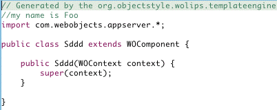

My Templates My Context
.
- Create the file $User.Home/Library/WOLips/MyContext.xml with the following content.

- Copy the file wocomponent-wocomponent.java.vm to the directory $User.Home/Library/WOLips. The template is located in the template directory of the org.objectstyle.wolips.templateengine plugin.
- Change the copy to:

- Create a new WOComponent in your project.
- The .java of your component should look like this.
